Training together, through the screen
bim brought social interaction to fitness by letting people work out together over video call. This is how it turned into a tool coaches could build a business on, and the design system that had to serve both audiences at once.
The challenge
bim was built for a moment when everyone trained at home. When that moment ended, the product had to find who still needed it, and give them a reason to pay.
- Role
- Product designer and product manager
- Method
- Sprints, user-centred design
- Scope
- Interviews with coaches, personas, prioritisation with the team, wireframes and flows, the interface, user testing, and the design system
The pivot
From friends to coaches
bim was born during COVID, as a way to train with your friends over video. When lockdown ended, the idea had to move with the people using it.
- 1Training with friends, at homeGyms were closed, so bim let people work out together on a video call, with friends, family or coworkers.
- 2Everyone went back outsideAs soon as lockdown lifted, people wanted to train in person and outdoors again. Daily active users fell.
- 3Coaches still had the problemThey taught one to one, ran sessions on Zoom and sent exercises as PDFs. They needed one place to coach and follow their students.
How it pivoted
The first version was built for friends on a call, the last one around coaches and their communities. Pick a screen, then drag the line to compare.
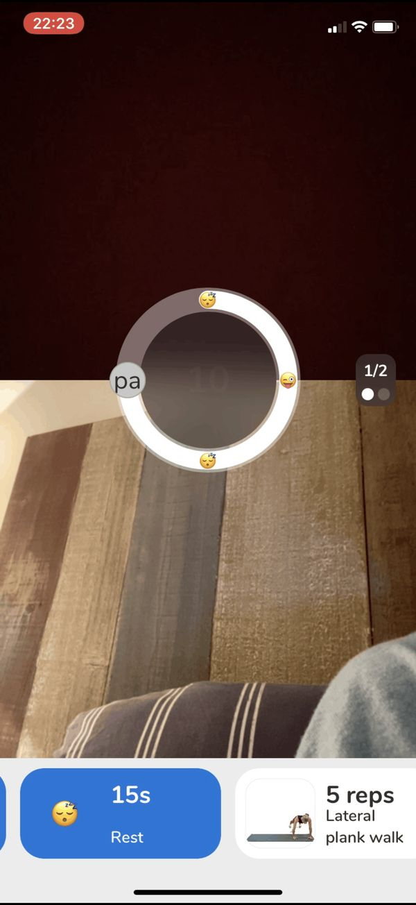
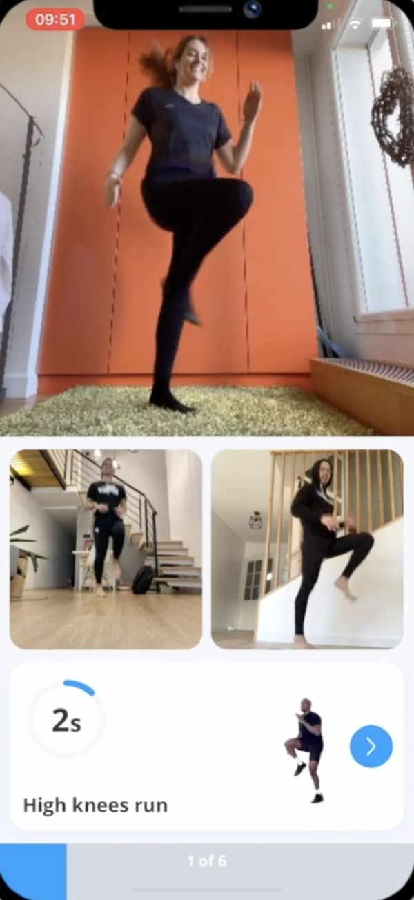
Drag to compare before and after
Training live
- Before
- A ring timer over the camera feed. The exercise itself was a line of text in the corner.
- After
- The exercise video leads, the people training with you sit underneath, and the timer and progress are always in view.
Choosing a workout
- Before
- A text list of programs that all looked the same, so people picked the first one.
- After
- A home built around photography: today's workout, recommendations for you, and tasks to get started.
Planning a session
- Before
- Everyone joined the call first, then had to agree on a program before anyone could start.
- After
- Sessions are planned ahead, for today, tomorrow and this week. The coach schedules them and students just join.
Your community
- Before
- A group chat between friends, which also had to work as the place to say a training did not start.
- After
- Each coach's community has its own page: upcoming live sessions to join, sessions on video, and a chat with everyone in it.
After a workout
- Before
- A results card with times and reactions, gone as soon as you closed it.
- After
- A summary of the session: exercises, duration and calories, who trained with you, and a picture to share.
Your profile
- Before
- A friend count, a training count and a list of programs.
- After
- A profile that says who you are and what you train for, with your videos, and chat, video call or Instagram one tap away.
What bim became
A tool for coaches to run their one-to-one sessions, follow their students' training and create programs for each of them. Students follow their coach's community, where the live sessions happen. Two audiences, who do not want the same thing from the product.
For coaches
- Run one-to-one sessions and group classes
- Follow each student's training between sessions
- Create programs specific to each student
- Grow a community, and earn from it with a subscription
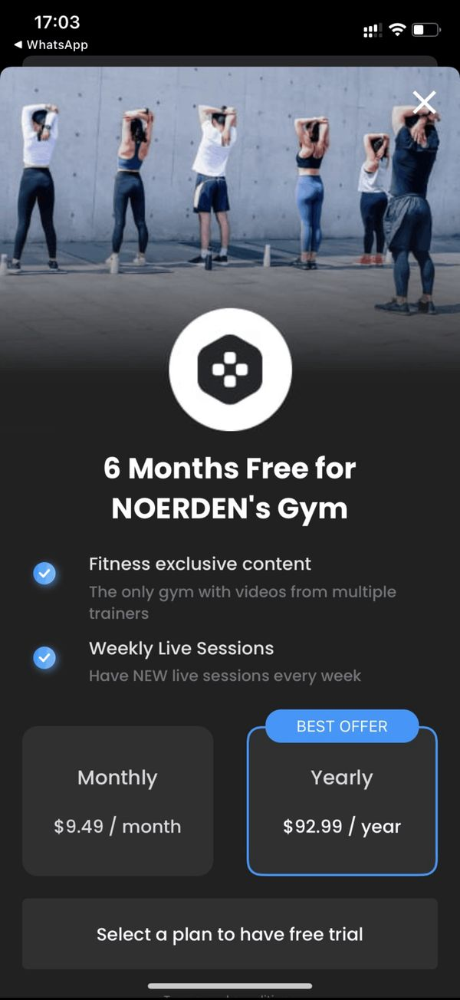
For students
- Follow their coach's community
- Join live sessions, or train alone with the coach's programs
- See their progress, week after week
- Keep training with friends, family and coworkers
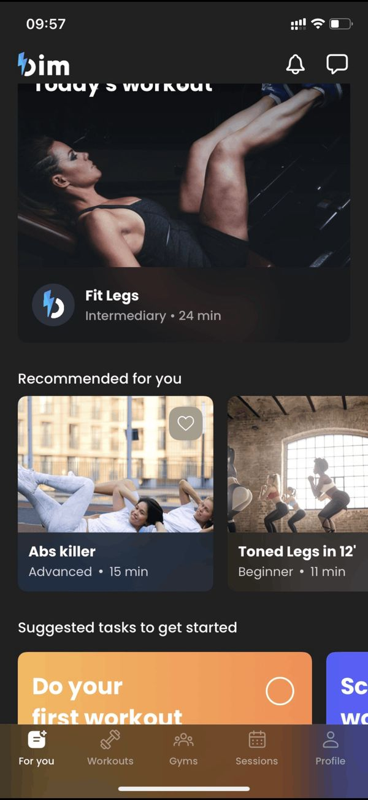
bim has to stay fun for the people training, and at the same time be competent and professional for the coaches and the companies paying for it.
The tension to design againstThe team
Ten people, working in sprints. One designer, which is why the design system mattered as much as the screens did.
- Building
- 6 developers and 1 tester
- Business
- The CEO, and 1 business and marketing
- Design
- 1 product designer and manager
Research
The new direction pointed at coaches, and nobody on the team had designed for them before. So we went and asked them.
- 1Find the coachesRecruiting people who actually teach for a living, not people who go to the gym.
- 2Interview in pairsSemi-structured interviews run by two people at a time, marketing and design together.
- 3PersonasNeeds and pain points, written down so the whole team could argue with the same material.
- 4Define and prioritiseCard sorting on what came out of the interviews, then a scored list.
- 5WireframingFlows first, screens second.
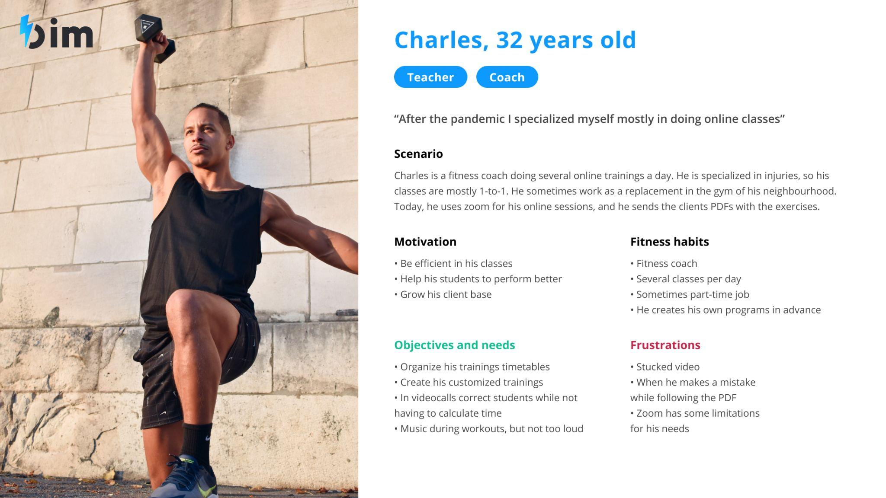
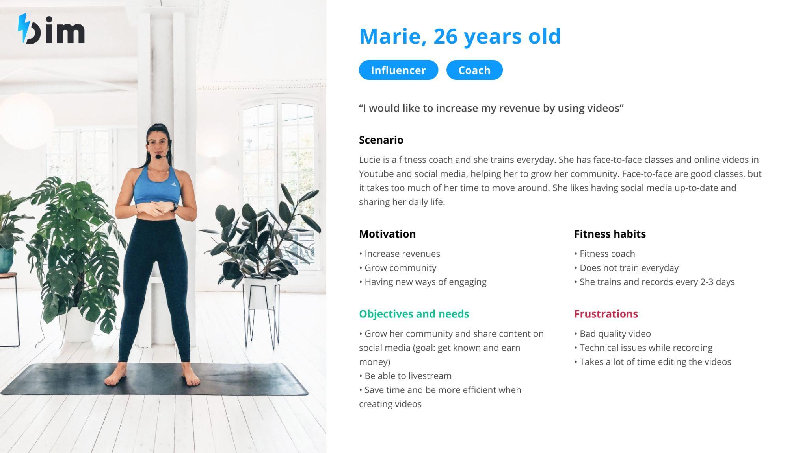
What to build first
Card sorting on the key points from the interviews. Each person proposed functionalities against a need or a pain point, we discussed what was missing, then everyone prioritised individually before we compared.
| Functionality | Priority | Technical effort | Design effort |
|---|---|---|---|
| Create a coach account, or switch to coach | 1 | Low | Low |
| Improvement of communities | 2 | Low | Medium |
| Video recording | 2 | High | High |
| Free session | 3 | Low | Medium |
How did we test the new features?
- 1Before developmentTask analysis with friends, family and the partner coaches.
- 2After developmentGoogle Analytics, Amplitude and satisfaction surveys.
Some of the pain points
-
Onboarding was too long
We cut it down and made some of the fields optional.
-
Videos sat outside the communities
At the beginning they were not inside the group they belonged to, which is where people looked for them. We moved them in: each community now has its own sessions on video.
-
Cameras go off
In most live classes people turn their own camera off, which is worth knowing before designing a screen built around faces.
Where it ended up
The latest version of the app, recorded when I left the company. Tap a phone to play it.
-
Getting started
Sign up, pick a username and, for coaches, the languages they teach in and a certificate, because verified coaches are more trusted by their communities.
-
Workouts and routines
Browse workouts, build a routine from more than 160 exercises, follow it with the guided timer, and look back at past trainings.
-
Communities and coaches
Discover a coach, join their gym, chat with them, and schedule a session where the coach leads the workout.
The design system
One designer, six developers and a product with two audiences. The system had to hold the visual identity together and be specific enough to hand over, in light mode and in dark mode, without being rewritten every sprint.
Written as a living document. The parts that were still being decided are marked as such here, the same way they were marked in it.
Logo
The mark changed with the product, from a speech bubble to a lightning bolt. Three rules cover everywhere the new one lands.
Before
The b as a speech bubble, for an app about chatting and training with friends.
Now
The b as a lightning bolt, meant to express energy, movement and power.
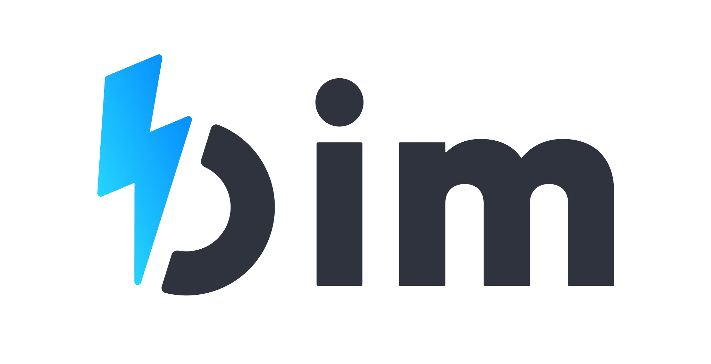
-
Light or dark ground
Use the version that corresponds to it.
-
Colourful ground
Use the logo fully in white.
-
On top of an image
Use the white logo, and darken the area of the image it sits on.
Colour, mode by mode
The app has a light mode and a dark mode, so the palette splits three ways: colours only for light, colours only for dark, and colours shared by both. Dark mode is built from white at a given opacity rather than from separate greys, which is why its swatches are shown over the dark card they sit on.
Light mode
Text, backgrounds and cards.
- Title#2E333E
- Body text#80848F
- Placeholder#AAADB4
- Medium grey#C3CBD7
- Light elements#F5F6F8
- Light card#FFFFFF
- Light background#F5F6F8
- White background#FFFFFF
Dark mode
The same roles, built from white at four opacities over two greys.
- Title#FFFFFF
- Body text#FFFFFF70% opacity
- Placeholder#FFFFFF50% opacity
- Medium grey#FFFFFF40% opacity
- Light elements#FFFFFF10% opacity
- Dark card#303030
- Dark background#212121
Colour, shared by both
The primary blue carries the main elements. The gradients belong to badges and challenges, and they are the part of the palette that makes the product feel like a game rather than a tool.
Primary
- Primary#0E99FF
- Primary gradient#0E99FF#6CBFFC
Gradients
Badges and challenges, the same in both modes.
- Purple#5162FC#9A4BFE
- Pink#B47CFB#FF6565
- Red#FCB851#FE4B84
- Yellow#FAFF1E#FF8A1F
- Lime#EFF23B#54EF5A
- Green#4FE1EB#1FCE70
- Light blue#2BE3FF#0287FD
- Dark blue#498EF7#141D6F
States
Warnings, success, notifications and ratings.
- Error#E85353
- Notifications#FF6053
- Ratings#FFC700
- Success#61B779
Typography
bim had just moved off Open Sans and onto Poppins when this was written, and the decision was not settled. Poppins, Noto Sans and Maven Pro were all still in play, so the type scale was left open rather than written down and immediately contradicted.
This is the one part of the system that stayed unfinished, and it is in the document as an open question rather than as a rule.
Iconography
A linear set, drawn to be easier to tell apart at a glance and to make the app read cleaner and more current. Three families: utility, video call, and fitness.
They were drawn ahead of the integration, for the developer to swap into the app once the set was complete.
Components
Buttons and cards, documented as specimens so they could be picked up from the file rather than measured off a screen.
Buttons
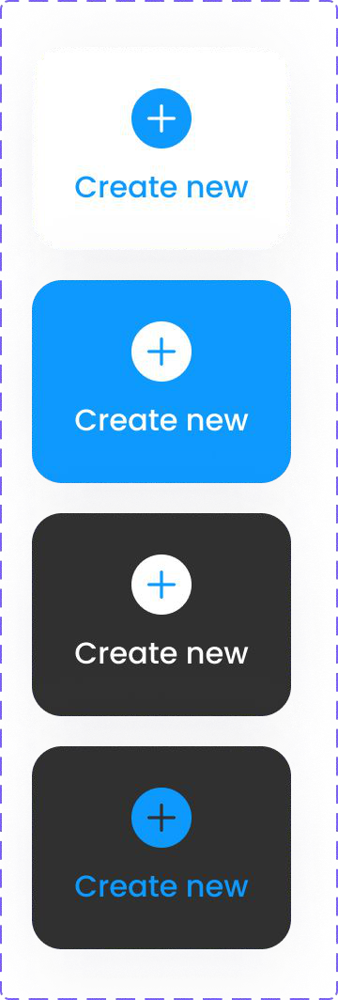
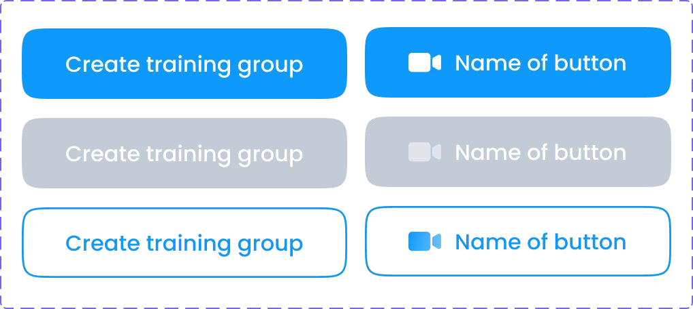
Cards
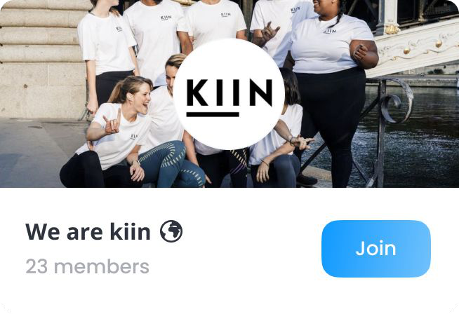
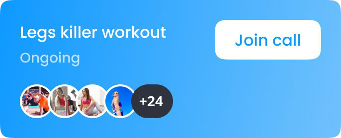
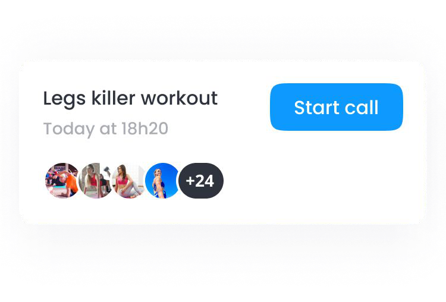
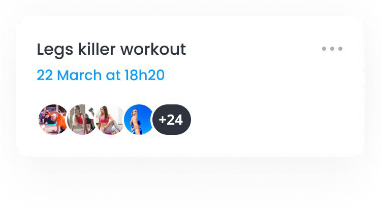
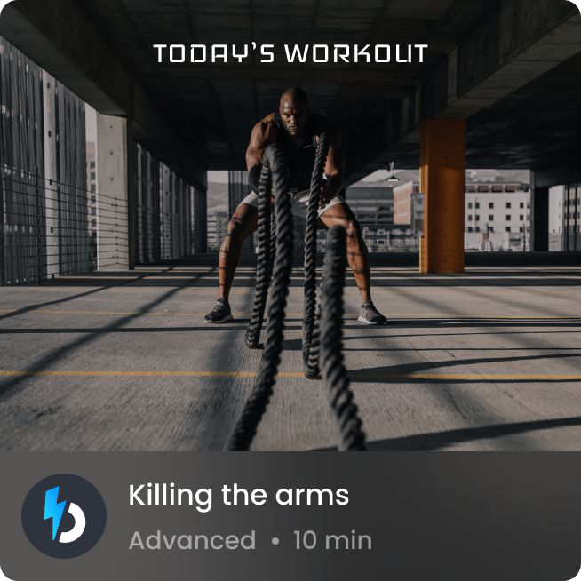
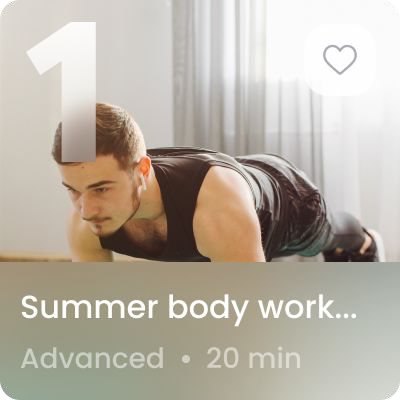
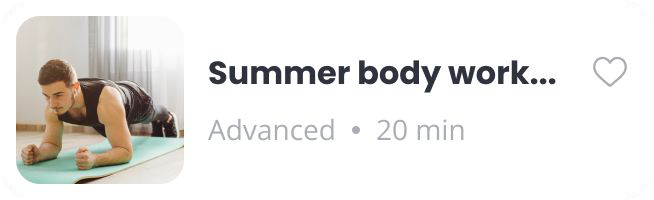
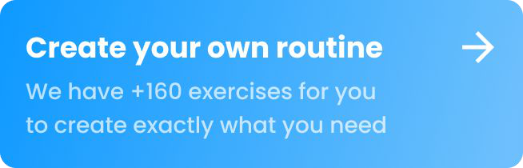
Imagery
Two rules, one per kind of image, because the two do completely different jobs.
Workouts
Colourful, someone actually doing the sport, and high quality. Never blurred.
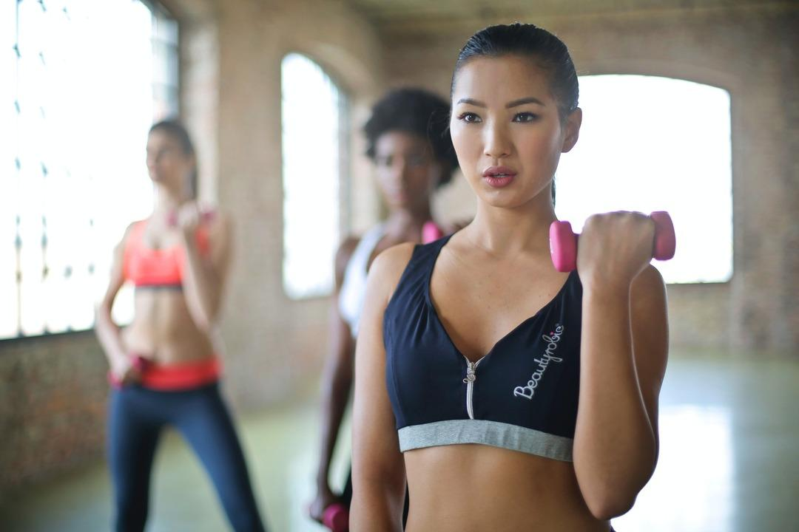
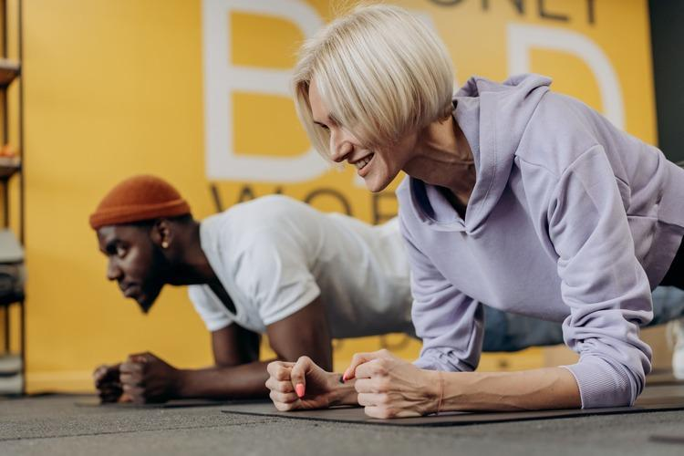
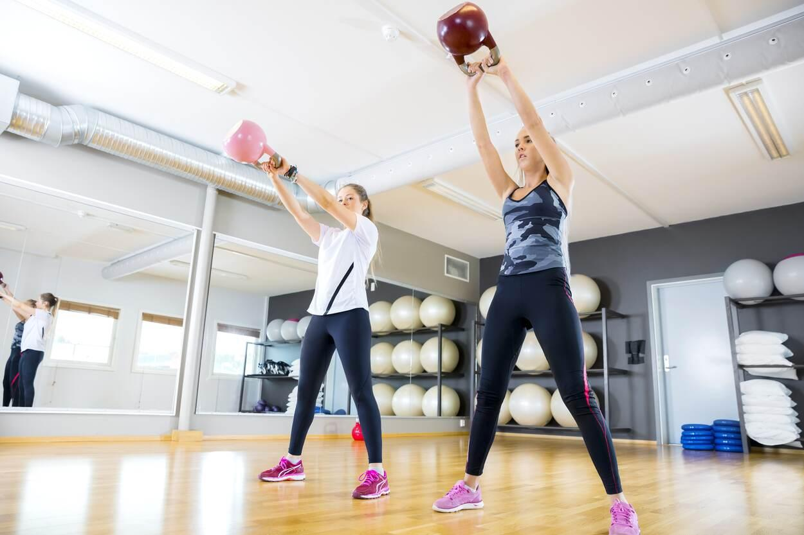
Exercises
Short mp4 clips played on a loop. The background has to be white, so the set stays consistent and the person doing the exercise is the only thing you look at.
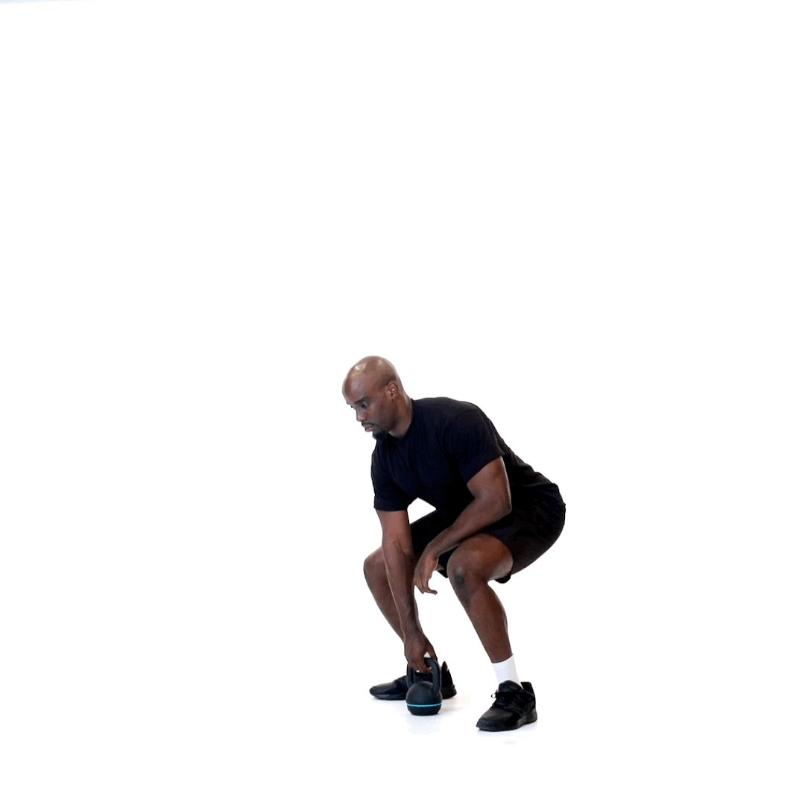
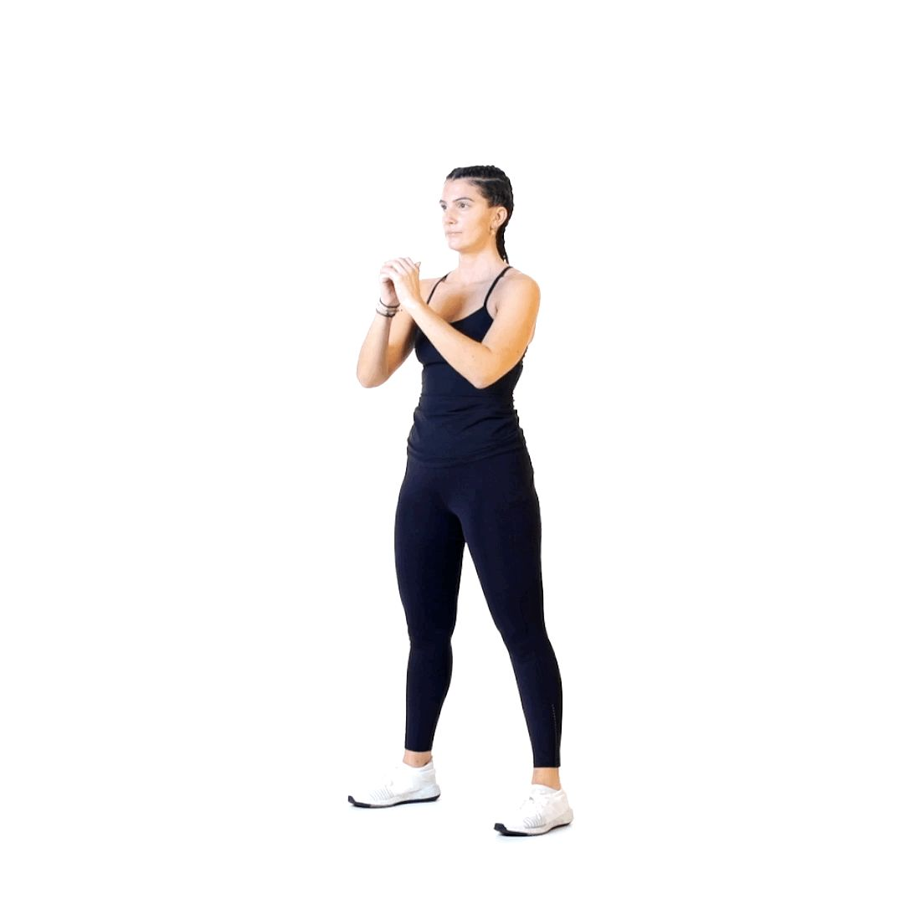
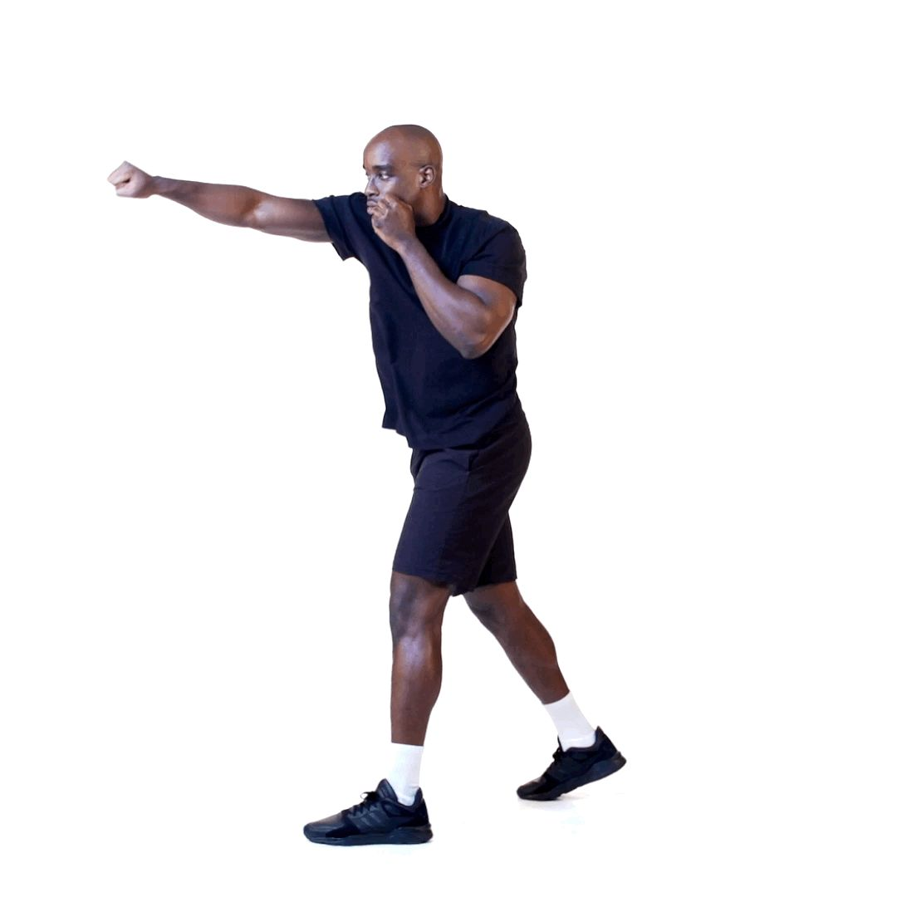